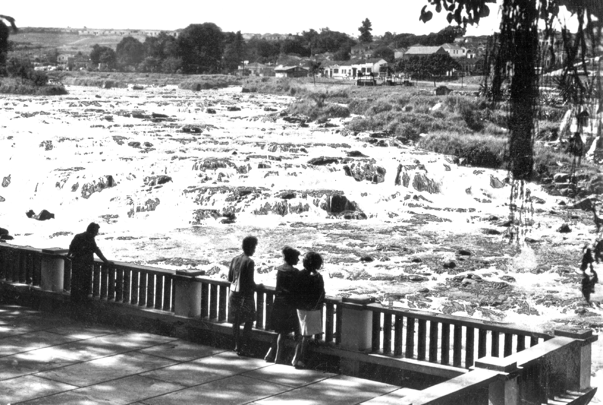

Série documental + dados
Águas do Rio Piracicaba
Quatro histórias para entender de onde vem a água, como o sistema mudou e por que o Rio Piracicaba continua atravessando a vida da cidade.
Dados públicos, documentos históricos e fontes oficiais organizados para registrar a realidade de cada período.
Explore a série